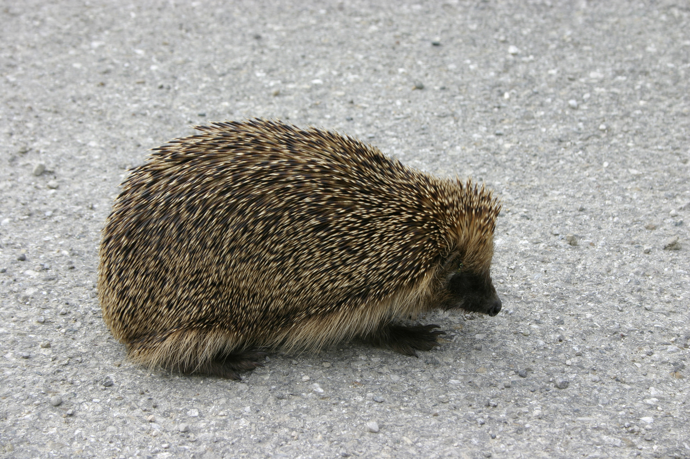

Поведінка
Незалежно від виду всі їжаки активні вночі, за декілька годин до заходу сонця зазвичай покидають місця свого гніздування та денної сплячки та починають обходити свою територію у пошуках харчування. Нічна активність зберігається до сходу сонця. Їжаки зазвичай залишаються прив'язаним до своєї території, для них невластива сезонна міграція: в один і той самий час вечора чи ночі їжак відвідує ті самі місця — побачивши тварину в певну годину вечора в певному місці, можна розраховувати її побачити наступного вечора приблизно в тому самому місці. За ніч може пройти шлях у 3—4 кілометри у пошуках їжі. У випадку самців — міграція у пошуках самиці може бути довша, самець може пройти до 7-ми кілометрів за добу.

За сучасними оглядами фауни у складі роду Erinaceus визнають 4 близькі види:
- їжак європейський
- Їжак білочеревий
- їжак південний
- їжак амурський